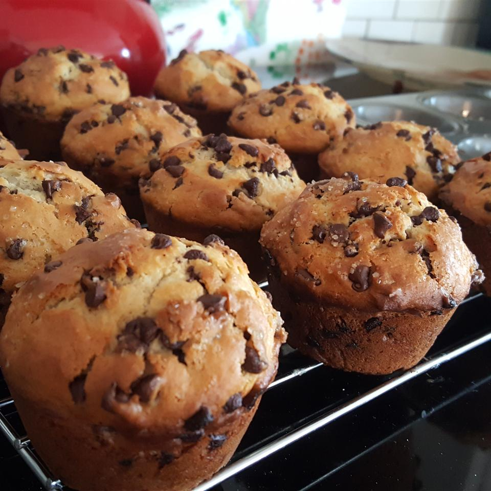

Chocolate Chip Muffin

Description
A very simple and easy recipe for tasty chocolate chip muffins. Quickly make a dozen muffins on your table.
Ingredients
- 2 cups all-purpose flour
- 1/2 cup white sugar
- 3 teaspoons baking powder
- 1/2 teaspoon salt
- 3/4 cup milk
- 1/3 cup vegetable oil
- 1 egg
- 3/4 cup mini semi-sweet chocolate chips
- 3 tablespoons white sugar
- 2 tablespoons brown sugar
Steps
- Heat oven to 400 degrees F (205 degrees C). Grease bottom of 12 muffin cups or line with baking cups.
- In a medium bowl, mix flour, 1/2 cup of sugar, baking powder, chocolate chips, and salt.
- In a small bowl, mix milk, oil and eggs.
- Combine all ingredients at once; stir just until dry ingredients are moistened.
- Fill muffin cups 2/3 full. Sprinkle tops of muffins before baking with a combination of 3 tablespoons sugar and 2 tablespoon brown sugar.
- Bake for 20 to 25 minutes or until toothinpick inserted in center comes out clean.
- Cool for 1 minute before removing from pan.